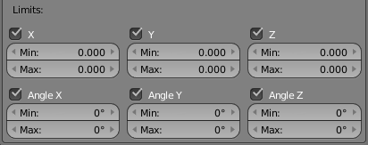

Constraints¶
The Constraints tab in Properties editor exposes constraints setups for current object.
Currently in UPBGE only the Rigid Body Joint constraint can be set through the user interface.
Rigid Body Joint Constraint¶
The Rigid Body Joint constraint is very special, it is used by the physics part of UPBGE to simulate a joint between its owner and its target. It offers four joint types: hinge type, ball-and-socket type, cone-twist type, and generic six-DoF type.
The joint point and axes are defined and fixed relative to the owner. The target moves as if it were stuck to the center point of a stick, the other end of the stick rotating around the joint/pivot point.
Note
In order for this constraint to work properly, both objects (so the owner and the target object) need to have Collision Bounds enabled.
Options¶
Rigid Body Joint panel.¶
- Target
Object used to select the constraints target, and is not functional (red state) when it has none.
- Pivot Type
- Ball
Works like an ideal ball-and-socket joint, i.e. allows rotations around all axes like a shoulder joint.
- Hinge
Works in one plane, like an elbow: the owner and target can only rotate around the X axis of the pivot (joint point).
- Limits

Angular limits for the X axis.
- Cone Twist
Similar to Ball, this is a point-to-point joint with limits added for the cone and twist axis.
- Limits
Angular limits.
- Generic 6DOF
Works like the Ball option, but the target is no longer constrained at a fixed distance from the pivot point, by default (hence the six degrees of freedom: rotation and translation around/along the three axes). In fact, there is no longer a joint by default, with this option, but it enables additional settings which allow you to restrict some of these DoF:
- Limits
- 
Linear and angular limits for a given axis (of the pivot) in Blender Units and degrees respectively.
- Child Object
Normally, leave this blank. You can reset it to blank by right-clicking and selecting Reset to Default Value.
- Linked Collision
When enabled, this will disable the collision detection between the owner and the target (in the physical engine of the BGE).
- Display Pivot
When enabled, this will draw the pivot of the joint in the 3D Views. The most useful, especially with the Generic 6DOF joint type!
- Use Breaking
Allow breaking of constraint on high impulse.
- Breaking Impulse Threshold
Break constraint on impulse greater than threshold.
- Pivot
These three numeric fields allow you to relocate the pivot point, in the owner’s space.
- Axis
These three numeric fields allow you to rotate the pivot point, in the owner’s space.